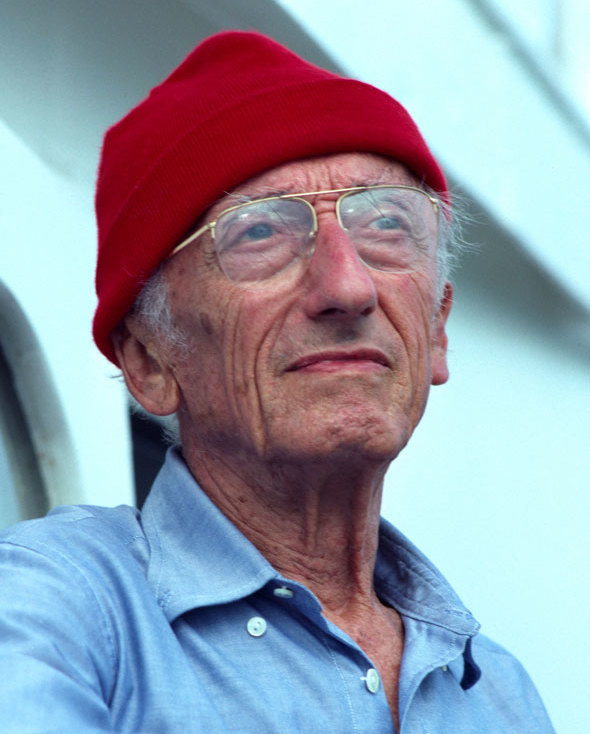
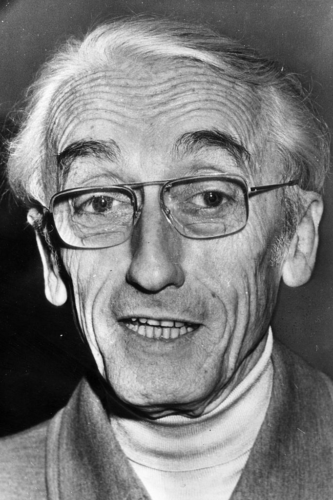
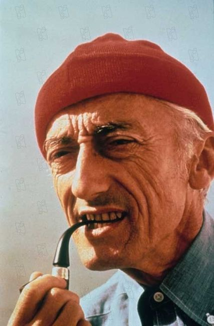
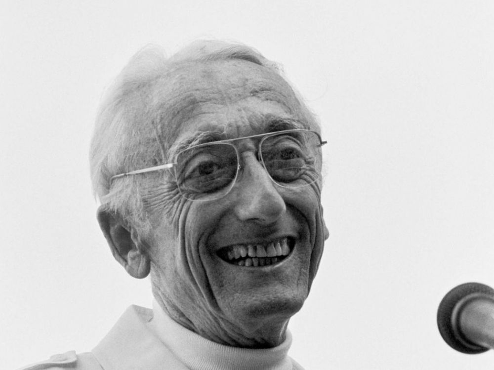
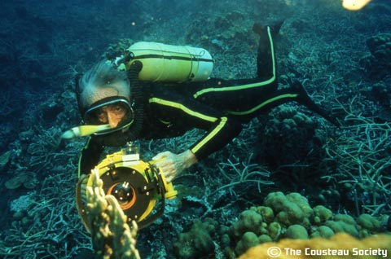

Жак-Ив Кусто
JACQUES-YVES COUSTEAU
- Биография

- Жак-Ив Кусто - французский исследователь Мирового океана, режиссёр научно-популярных фильмов «Подводная Одиссея», изобретатель акваланга, автор множества книг о подводном мире. Друзья и знакомые называли его Капитаном Кусто. В целом можно утверждать, что работа этого человека для многих людей открыла «голубой континент».
Жак-Ив родился в предместье Бордо, в маленьком городке под названием Сент-Андре-де-Кюбзак. Его отец Даниэль был адвокатом, известным на всю страну как самый молодой юрист, получивший докторскую степень. Мама мальчика, Элизабет, происходила из семьи фармацевтов, но сама занималась домашним хозяйством и воспитанием Жак-Ива и его старшего брата Пьер-Антуана.
Семья постоянно проживала в Париже, но много путешествовала. Во время отдыха на море Кусто-младший научился плавать и навсегда полюбил воду. Кстати, ребенку в 7 лет был поставлен неизлечимый диагноз хронического энтерита, из-за которого он на всю жизнь остался более чем худощавым.Жак-Ив родился в предместье Бордо, в маленьком городке под названием Сент-Андре-де-Кюбзак. Его отец Даниэль был адвокатом, известным на всю страну как самый молодой юрист, получивший докторскую степень. Мама мальчика, Элизабет, происходила из семьи фармацевтов, но сама занималась домашним хозяйством и воспитанием Жак-Ива и его старшего брата Пьер-Антуана.
Семья постоянно проживала в Париже, но много путешествовала. Во время отдыха на море Кусто-младший научился плавать и навсегда полюбил воду. Кстати, ребенку в 7 лет был поставлен неизлечимый диагноз хронического энтерита, из-за которого он на всю жизнь остался более чем худощавым.

- Фильмы и книги
- В начале 50-х годов Жак-Ив Кусто арендовал старый списанный тральщик Британских Королевских ВМС, назвал его «Калипсо» и начал исследования океана. Результатом экспедиции стала научно-популярная книга «В мире безмолвия», изданная в 1953 году. Она принесла Кусто всемирное признание, а фильм, снятый по ее мотивам, моментально сделал его легендой документального жанра. Картина «В мире безмолвия» была награждена премиями «Оскар» и «Золотая пальмовая ветвь».
За дебютным фильмом последовали такие ленты, как «Золотая рыба» и «Мир без солнца», а затем появился сериал «Подводная одиссея команды Кусто», который выходил на экраны в общей сложности 20 лет. Кроме него Жак-Ив снял такие циклы фильмов об океанах, морях, реках и их обитателях, как «Оазис в Космосе», «Приключения в Северной Америке», «Амазонка», «Повторное открытие мира» и многие другие.
Эти фильмы пользовались грандиозным успехом, так как позволяли людям заглянуть в такие места, которые обычно им недоступны. Но не все специалисты одобряли работы Кусто. Он многократно подвергался критике за псевдонаучность и особенно за жестокое обращение с рыбами.
Так, его коллега Вольфганг Ауэр утверждал, что многие убийства и жестокости над рыбами были целенаправленными и делались Кусто для качественных кадров в своих фильмах. Также иногда Жак-Ива обвиняли в поддельных кадрах, например, выход людей из батискафа в глубоководную пещеру, где обычно атмосфера непригодна для дыхания.

- Изобретения
- Сначала Жак-Ив Кусто погружался под воду с помощью маски и трубки, но затем он совместно со своим приятелем Эмилем Ганьяном разработал устройство, позволяющее дышать глубоко под водой. Первый в мире акваланг был испытан им в 1938 году и помог не только Кусто, но и многим ученым лучше узнать подводный мир.
Сегодня, вероятно, съёмки под водой не выглядят чем-то сверхъестественным, но до Жак-Ива такого и предположить никто не мог. Именно он разработал водонепроницаемую фотокамеру и осветительный прибор, а позднее сделал первую телевизионную систему, способную снимать видео на большой глубине.
Также французскому исследователю принадлежит теория о том, что морские свиньи имеют феноменальные способности к эхолокации, то есть эти животные чувствуют оптимальный путь через водные просторы. Позднее эта теория была доказана профессиональными биологами.
А благодаря своим научно-популярным книгам и кинофильмам Кусто стал прародителем нового способа телевизионной коммуникации – дивульгационизма, то есть обмен мнениями между профессионалами и аудиторией обычных интересующихся людей. Сегодня по этой технологии построены все современные ток-шоу и другие телевизионные проекты, за что нужно благодарить, опять же, французского океанографа.

- Личная жизнь
- Первый раз Жак-Ив Кусто женился в 1937 году на Симоне Мельхиор, дочери легендарного французского адмирала. Симона принимала участие в большинстве экспедиций мужа, а команда тральщика «Калипсо» придумала ей ласковое прозвище «Пастушка».
У супругов было двое сыновей - Жан-Мишель и Филипп, который погиб в 1979 году во время крушения самолета «Каталина». После этой трагедии отношения между Жак-Ивом и Симоной разладились. Они стали жить отдельно, но официально так и не развелись.
Когда Симона Мельхиор скончалась от рака в 1991 году, Кусто женился на Франсине Триплет, с которой к тому моменту жил уже более 10 лет и воспитывал общих детей – дочь Диану и сына Пьера.
Кстати, из-за повторной женитьбы у него окончательно испортились отношения со старшим сыном Жаном-Мишелем, и он даже в судебном порядке запретил тому использовать фамилию Кусто для своей коммерческой деятельности.
- Смерть
- Жак-Ив Кусто скончался 25 июня 1997 года от инфаркта миокарда. Захоронение тела великого ученого было произведено на фамильном участке на кладбище Сен-Андре-де-Кюбзак, где покоятся все его предки. Но его исследовательская деятельность не прекратилась. Основанное им общество «Команда Кусто» действует до сих пор.
Интересно, что память о Жак-Иве Кусто запечатлена не только во Франции, но и в России. Например, одна из общеобразовательных школ Санкт-Петербурга с углублённым изучением французского языка названа его именем.

- Фильмография
-
- 1956 - «В мире безмолвия»
- 1958 - «Золотая рыба»
- 1965 - «Мир без солнца»
- 1965 - «Мир без солнца»
- 1975 - «Путешествие на край света»
- 1977 - «Оазис в Космосе»
- 1981-1982 - «Приключения в Северной Америке»
- 1982-1985 - «Амазонка»
- 1986-1999 - «Повторное открытие мира»
- 1995 - « Легенда «Калипсо»
- Библиография
-
- 1953 - «В мире безмолвия»
- 1963 - «Живое море»
- 1965 - «Мир без солнца»
- 1970 - «Акула: Блистательный варвар морей»
- 1971 - «Жизнь и смерть кораллов»
- 1972 - «Могучий властелин морей»
- 1975 - «Дельфины»
- 1979 - «Жизнь на краю земли»
- 1984 - «Путешествие в Амазонку Жака Кусто»
- 1985 - «Жак Кусто: Мир океана»